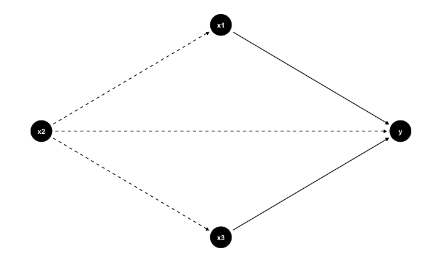
FMB819: R을 이용한 데이터분석
Instrumental Variables
Today’s Agenda
도구변수 instrumental variables (IV)
John Snow’s 연구: 1850년 영국 런던 …
IV estimator란?
2단계 최소좌승법 (Two Stage Least Squares)
약한 도구변수 (Weak Instruments)
배경
만약 개인이 처치를 받을지 여부를 통제할 수 있다면, 선택 편향(selection bias)이 발생할 수 있음.
RCT는 무작위 할당을 통해 자가 선택(self-selection) 문제를 해결함.
따라서 실험 데이터가 있다면 좋은 해결책이 존재함.
그렇다면 비실험 데이터(non-experimental data)는 어떻게 분석해야 할까?
비실험 데이터 (Non-Experimental Data)
누락된 변수 편향(omitted variable bias)에 대해 논의한 바 있음.
오차항 \(u\)에 포함된 변수 \(x_2\)와 설명 변수 \(x_1\) 사이에 상관관계가 존재한다면 어떻게 될까?
우리는 \(x_1\)의 효과와 \(x_2\)의 효과를 분리할 수 없기 때문에 편향된 추정치를 얻게 됨.
이러한 편향이 너무 심하면 효과의 방향(부호)조차 잘못 추정할 수 있음.
- IV 는 OVB로 인한 문제를 해결한다.
1850년 런던: 켄싱턴의 빈민가
존 스노우의 (비)실험: 콜레라가 도시를 강타
존 스노우(John Snow)는 1850년경 런던에서 활동한 의사로, 그 당시 도시에서는 콜레라가 여러 차례 창궐하였음.
당시 질병의 전파 방식에 대한 논쟁이 있었음: 공기를 통해 전염되는가, 아니면 물을 통해 전염되는가?

1850년의 의료 지식
세균이 질병을 유발할 수 있다는 사실이 알려지지 않음.
현미경은 존재했지만, 해상도가 낮아 병원균을 명확히 볼 수 없었음.
대부분의 인간 병원균은 육안으로 관찰할 수 없음.
이른바 ‘감염 이론’(즉, 세균에 의한 감염)이 일부 지지를 받았으나,
당시의 지배적인 이론은 질병이 미아스마에 의해 발생한다는 것이었음.
스노우의 탐정 활동
스노우는 방대한 데이터를 수집하였음.
1854년 발생한 콜레라 유행 시 사망자의 위치를 지도에 표시하였음.
이 사건이 바로 악명 높은 브로드스트리트 펌프(Broadstreet Pump) 사건임.
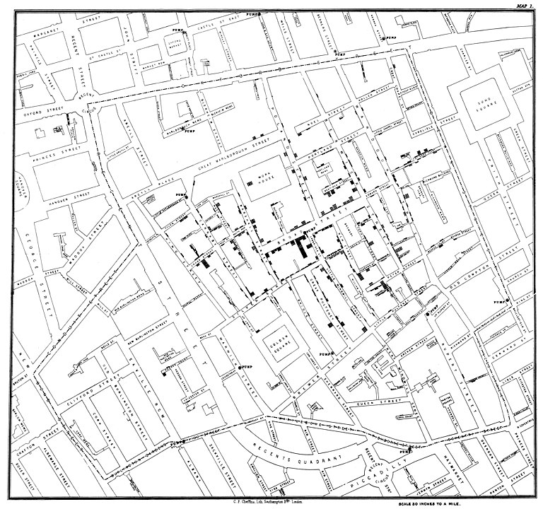
cholera 패키지
cholera 패키지의 기능
- 또는 사례 번호 15번 환자의 이동 경로를 시각화할 수도 있음:
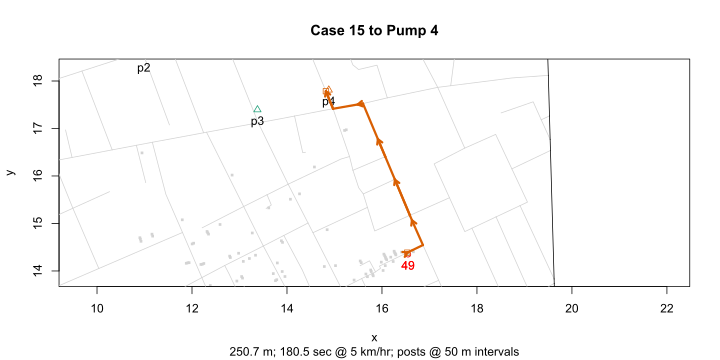
- 혹은 펌프 주변 지역의 보로노이 다각형(Voronoi polygons)을 추정할 수도 있음:
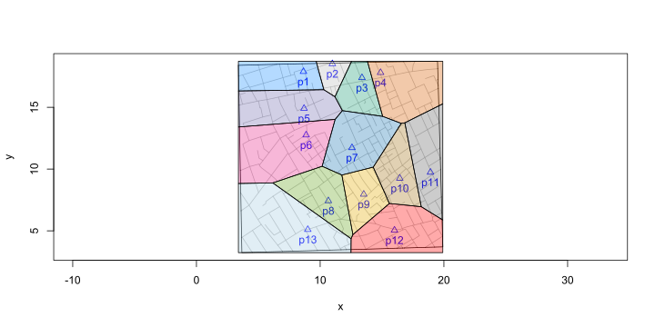
브로드 스트리트 펌프의 제거?
스노우는 브로드 스트리트 펌프(Broad Street Pump)가 원인이라고 지목함.
그는 펌프 손잡이를 제거할 것을 요청하였음.
하지만, 그는 이 조치가 유행병의 종식을 가져왔다는 점에 회의적이었음.
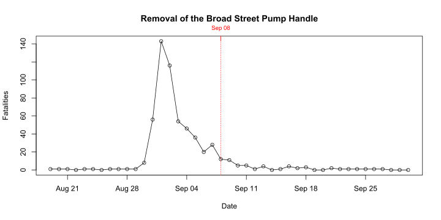
런던의 상수도 공급 지도
런던의 상수도 공급원은 템스강(River Thames)이었음.
각 상수도 회사는 다른 취수 지점(intake points)을 가졌음.
사우스워크(Southwark) 및 복스홀(Vauxhall) 수자원 회사는 대형 하수 배출구 아래에서 취수를 하였음.
램버스(Lambeth) 수자원 회사는 더 깨끗한 상류에서 취수를 하였음.
스노우의 결론
- 스노우가 수집한 데이터는 다음과 같음:
| area | numhouses | deaths | death1000 |
|---|---|---|---|
| Southwark and Vauxhall | 40046 | 1263 | 315 |
| Lambeth | 26107 | 98 | 37 |
| Rest of London | 256423 | 1422 | 59 |
- 그리고 다음과 같은 결론을 내림:
만약 사우스워크 및 복스홀 수자원 회사가 취수 지점을 상류로 옮겨 램버스 수자원 회사와 같은 곳에서 물을 공급받았다면, 약 1,000명의 목숨을 구할 수 있었을 것이다.
- 하지만 미아스마 이론의 지지자들은 여전히 이를 결정적인 증거로 받아들이지 않았음. 왜냐하면 이 지역의 나쁜 공기질을 유발하는 다른 요인들도 존재했기 때문임.
We Need A Model.
스노우의 콜레라 전파 모델
개인 \(i\)가 콜레라로 사망하면 \(c_i = 1\), 그렇지 않으면 \(c_i = 0\)로 정의함.
\(w_i = 1\)은 \(i\)의 식수가 오염되었음을 의미하며, \(w_i = 0\)은 깨끗한 물을 의미함.
당시 기술로는 작은 미생물을 감지할 수 없었음.
\(u_i\)는 개인 \(i\)의 사망 확률에 영향을 미치는 관측되지 않는 요인(예: 가난, 거주 위치, 공기질, 유전적 특성 등)을 포함함.
우리는 이를 다음과 같이 수식화할 수 있음:
\[ c_i = \alpha + \delta w_i + u_i \]
단순한 분석이 항상 옳은가?
스노우는 자신의 데이터를 사용하여 깨끗한 물을 마시는 것과 콜레라 발생률 간의 상관관계를 평가할 수도 있었음.
즉, \(Cor(c_i, w_i)\)를 측정할 수 있음.
만약 \(Cor(c_i, w_i) \approx 0.5\)라면, 이는 감염 이론을 증명하는가?
경제학자 앵거스 디턴(Angus Deaton)은 다음과 같이 지적함:
“오염된 물을 마신 사람들은 가난할 가능성이 더 높고, 다양한 방식으로 오염된 환경에 살고 있었으며, 당시 콜레라의 원인으로 여겨졌던 ’유독한 미아스마’에 더 많이 노출되었음.”
☹️ 단순한 상관관계로는 충분하지 않음!
단순 비교의 문제점
깨끗한 물을 마시는 사람과 오염된 물을 마시는 사람을 단순 비교하는 것은 의미가 없음.
왜냐하면 모든 조건이 동일하지 않기 때문(\(all\ else\ is\ not\ equal\)). 깨끗한 물을 마시는 것과 가난, 열악한 거주 환경, 나쁜 공기질 등이 밀접한 관련이 있음.
이는 OLS 추정을 위한 필수적인 직교성(orthogonality) 가정을 위반함:
\[E[u_i | w_i] \neq 0\]
또 다른 표현으로, \(Cov(w_i, u_i) \neq 0\) 즉, \(w_i\)는 내생적(endogenous) 변수임.
즉, \(u_i\)에 포함된 요소들이 \(w_i\)와 \(c_i\) 모두에 영향을 미침.
스노우의 모델과 대수적 접근
단순한 모델을 다시 떠올려 보자:
\[c_i = \alpha + \delta w_i + u_i\]
이제 \(w\)의 두 가지 값에 따라 기대값을 계산하면,
\[\begin{align} E[c_i | w_i = 1] &= \alpha + \delta + E[u_i | w_i = 1] \\ E[c_i | w_i = 0] &= \alpha + \phantom{\delta} + E[u_i | w_i = 0] \end{align}\]
이 두 식을 빼면,
\[\begin{equation} E[c_i | w_i = 1] - E[c_i | w_i = 0] = \delta + \left\{ E[u_i | w_i = 1] - E[u_i | w_i = 0]\right\} \end{equation}\]
마지막 항 ( { E[u_i | w_i = 1] - E[u_i | w_i = 0]} ) 은 0이 아님 (디턴이 말한 것처럼!).
즉, 회귀 분석을 통한 \(\delta\) 추정치는 편향됨(biased).
The IV Estimator
존 스노우 왈
“… 물 공급이 아주 복잡하게 섞여있다. 각 회사의 수도관은 모든 거리와 거의 모든 골목길과 후미진 곳까지 이어진다. …
이 실험은 매우 거대한 규모에서 진행되었다. 무려 30만 명이 넘는 사람들이 성별, 연령, 직업, 사회적 계층과 상관없이 두 개의 그룹으로 나뉘었다.
한 그룹은 런던의 하수를 포함하여 콜레라 환자들로부터 나온 모든 오염물을 포함할 가능성이 있는 물을 공급받았으며,
다른 그룹은 그런 오염물로부터 완전히 자유로운 물을 공급받았다.”
London Water Supply
도구변수(IV) 제안
- 스노우는 도구변수(instrumental variable, IV) \(z_i\)를 제안함. 이는 가구 \(i\)에 물을 공급하는 수도 회사의 정체성임.
더 형식적으로, 도구변수를 다음과 같이 정의할 수 있음:
\[\begin{align*} z_i &= \begin{cases} 1 & \text{if 물 공급자가 Lambeth일 경우} \\ 0 & \text{if 물 공급자가 Southwark 또는 Vauxhall일 경우} \\ \end{cases} \\ \end{align*}\]
\(z_i\)는 식수의 순도 \(w_i\)와 높은 상관관계를 가짐.
하지만, \(z_i\)는 우리가 이전에 우려했던 \(u_i\) 내의 다른 모든 요인들과는 상관관계가 없어 보임.
- 물 공급은 수년 전에 결정되었으며,
- 같은 거리 내의 집들도 서로 다른 수도 공급자를 가질 수 있었음.
Simple IV in a DAG
- \(u\)는 독립변수와 결과 모두 영향을 미침
IV 추정량의 정의
이제 단순한 IV 추정량을 정의할 준비가 되었음.
기존과 마찬가지로, \(z\)의 값을 기준으로 조건부 기대값을 계산해보자:
\[\begin{align} E[c_i | z_i = 1] &= \alpha + \delta E[w_i | z_i = 1] + E[u_i | z_i = 1] \\ E[c_i | z_i = 0] &= \alpha + \delta E[w_i | z_i = 0] + E[u_i | z_i = 0] \end{align}\]
이 두 식을 빼면:
\[\begin{align} E[c_i | z_i = 1] - E[c_i | z_i = 0] &= \delta \left\{ E[w_i | z_i = 1] - E[w_i | z_i = 0]\right\} \\ &+ \underbrace{\left\{ E[u_i | z_i = 1] - E[u_i | z_i = 0] \right\}}_{=0 \text{ (독립성 가정에 의해)}} \end{align}\]
최종 IV 추정량
- 마지막으로, IV가 유효하다면 (즉, \(E[w_i | z_i = 1] - E[w_i | z_i = 0] \neq 0\)):
\[\begin{equation} \delta = \frac{E[c_i | z_i = 1] - E[c_i | z_i = 0]}{E[w_i | z_i = 1] - E[w_i | z_i = 0]} \tag{eq:IV} \end{equation}\]
즉, IV 추정량은 결과 변수(\(c\))의 변화량을 도구변수(\(z\))가 유발하는 설명 변수(\(w\))의 변화량으로 나눈 값임.
특수한 경우: 월드(Wald) 추정량
\(x \mapsto y\)는 \(x\)가 \(y\)의 추정치임을 의미한다고 하자:
- \(\overline{c}_1 \mapsto E[c_i | z_i = 1]\): Lambeth에서 공급받은 가구 중 콜레라에 걸린 비율.
- \(\overline{w}_1 \mapsto E[w_i | z_i = 1]\): Lambeth에서 공급받은 가구 중 오염된 물을 공급받은 비율.
- \(\overline{c}_0 \mapsto E[c_i | z_i = 0]\): Lambeth 외 지역에서 공급받은 가구 중 콜레라에 걸린 비율.
- \(\overline{w}_0 \mapsto E[w_i | z_i = 0]\): Lambeth 외 지역에서 공급받은 가구 중 오염된 물을 공급받은 비율.
이 경우 추정량은 다음과 같음:
\[\begin{equation} \hat{\delta} = \frac{\overline{c}_1 - \overline{c}_0}{\overline{w}_1 - \overline{w}_0} \end{equation}\]
위의 모든 변수 \(c, w, z\)가 이진(binary) 변수인 경우, 이 추정량은 월드(Wald) 추정량이라 불림.
요약
도구변수(IV)는 관찰 데이터만 있는 상황에서 인과 관계를 식별할 수 있는 강력한 도구임. 특히, 조건부 평균 가정(\(E[u_i | x_i] = 0\))이 위배될 가능성이 있는 경우, 즉, \(x\)가 내생적(endogenous)일 때, 이를 해결할 수 있음.
IV \(z\)의 핵심 조건은 다음과 같음:
- \(z\)가 \(x\)에 대해 관련성(relevance)을 가져야 함.
- 예를 들어, \(z\)를 \(x\)에 대한 단순 회귀 분석에 사용했을 때 예측력이 높아야 함.
- 데이터에서 검증 가능한 조건임.
- \(z\)가 결과 변수에 영향을 미치는 다른 요인들과 무관하다는 이론적 근거가 필요함.
- 즉, \(z\)는 외생적(exogenous)이어야 하며, \(E[u | z] = 0\)이 성립해야 함.
- 이는 가정(assumption)이므로, 데이터로 직접 검증할 수 없음.
패키지 소개 Rayshader
- 모든 종류의 elevation 데이터를
raytracing할 수 있음. - 대부분의 ggplot 그래프를 3D로 변환할 수도 있음!
패키지 소개 Rayshader
- 이렇게만 하면 됨
library(ggplot2)
library(rayshader)
#Data from Social Security administration
death = read_csv("https://www.tylermw.com/data/death.csv", skip = 1)
meltdeath = reshape2::melt(death, id.vars = "Year")
meltdeath$age = as.numeric(meltdeath$variable)
# make a ggplot
deathgg = ggplot(meltdeath) +
geom_raster(aes(x=Year,y=age,fill=value)) +
scale_x_continuous("Year",expand=c(0,0),breaks=seq(1900,2010,10)) +
scale_y_continuous("Age",expand=c(0,0),breaks=seq(0,100,10),limits=c(0,100)) +
scale_fill_viridis("Death\nProbability\nPer Year",
trans = "log10",breaks=c(1,0.1,0.01,0.001,0.0001),
labels = c("1","1/10","1/100","1/1000","1/10000")) +
ggtitle("Death Probability vs Age and Year for the USA") +
labs(caption = "Data Source: US Dept. of Social Security")
# give it to rayshader
plot_gg(deathgg, multicore=TRUE,height=5,width=6,scale=500)교육과 수입의 관계
학교 교육이 수입에 미치는 영향
- 학교 교육이 수입에 미치는 인과적 영향은 무엇일까?
- 제이콥 민서(Jacob Mincer)는 이 중요한 질문을 연구하였음.
- 그가 제안한 모델은 다음과 같음:
\[ \log Y_i = \alpha + \rho S_i + \beta_1 X_i + \beta_2 X_i^2 + e_i \]
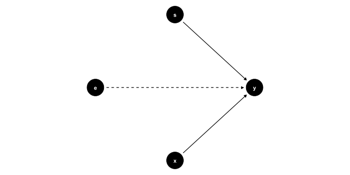
교육과 수입의 관계 분석
\[ \log Y_i = \alpha + \rho S_i + \beta_1 X_i + \beta_2 X_i^2 + e_i \]
- 민서는 \(\rho\) 값이 약 0.11이라는 결과를 발견함.
- 이는 추가적인 1년의 교육이 약 11%의 수입 증가와 관련이 있음을 의미함.
- DAG(유향 인과 그래프)를 살펴보면, 이 모델이 적절한지 판단할 수 있음.
- 하지만 이 모델이 왜 문제가 있을 수 있는가?
교육과 수입의 관계
능력 편향(Ability Bias)
- 특정 교육 수준과 경력을 가진 남성들의 수입을 비교함.
- 이를 통제한 후에도 모든 조건이 동일한가?
- 주어진 \(X\) 하에서:
- 근면성이 다른 노동자들을 찾을 수 있는가?
- 능력이 다른 노동자들을 찾을 수 있는가?
- 노동자의 가족 배경이 차이가 나는가?
- 물론 그렇다. 따라서 모든 조건이 동일한 것은 아님.
- 이는 문제가 됨. OLS가 일관되려면 다음의 직교성 가정이 필요함: \[E[e_i | S_i, X_i] \neq 0\]
- 이제 능력(Ability) \(A_i\)를 명시적으로 포함해보자.
민서의 모델과 관찰되지 않는 능력(Unobserved Ability)
- 사실 우리는 두 개의 관찰되지 않는 변수를 가지고 있음: \(e\) 와 \(A\).
- 물론 이를 구별할 수 없음.
- 따라서 새로운 관찰되지 않는 요인을 정의함: \[u_i = e_i + A_i\]
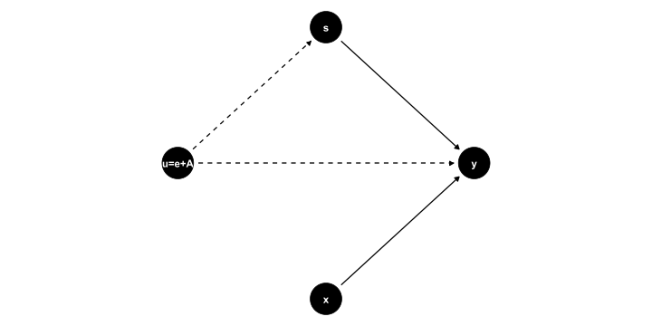
민서의 모델과 능력 편향의 영향
- 수식으로 표현하면: \[\log Y_i = \alpha + \rho S_i + \beta_1 X_i + \beta_2 X_i^2 + \underbrace{u_i}_{A_i + e_i}\]
- 때로는 이것이 중요하지 않으며 OLS의 편향이 작을 수 있음.
- 하지만 경우에 따라서는 상당한 영향을 미쳐 잘못된 결론을 내릴 수 있음. 예제 참고.
교육과 수입의 관계
앵그리스트와 크루거(1991): 출생일은 무작위일 것이다!
- 앵그리스트와 크루거(AK91)는 능력 편향을 다루는 영향력 있는 연구임.
- 연구 아이디어:
- 학생의 출생일을 나타내는 도구변수(IV)를 구성함.
- 특정 컷오프 날짜 이후 태어난 아이들은 학교를 늦게 시작함.
- 예시: 2021년 12월 31일까지 6세가 된 아이들은 2021년 9월에 1학년에 입학해야 함.
- 2015년 12월 31일에 태어난 경우, 학교 입학 시 나이는 5년 9개월임.
- 2016년 1월 1일에 태어난 경우, 학교 입학 시 나이는 6년 9개월임.
- 그러나 법적으로 16세가 되면 학교를 중퇴할 수 있음.
- 따라서 중퇴하는 사람들 중 일부는 더 많은 교육을 받았음.
- AK91은 출생 분기(quarter of birth) 더미 변수를 IV로 사용함: 교육 수준에 영향을 주지만 능력(\(A\))과는 관련 없음!
출생일 설정
16세 생일에 학교를 중퇴하면 몇 일 동안 학교에 다니는가?
AK91 IV 설정
- 출생 분기(quarter of birth) 더미 변수 \(z\): 교육 수준에 영향을 주지만 능력(\(A\))과는 관련 없음.
- 특히 4분기에 태어났는지 여부를 고려함.
AK91 추정: 2단계 최소자승법(2SLS)
AK91은 널리 사용되는 IV 추정 방법인 2단계 최소자승법(2SLS)을 소개함.
- 1단계(First Stage): 도구변수(예: \(z\))를 사용하여 내생 변수 \(s\)를 설명하는 모델을 추정함.
- 2단계(Second Stage): 1단계 모델을 이용하여 예측된 \(s\) 값을 사용하여 \(y\)를 추정함. 이를 통해 능력(\(A\))이 \(s\)와 \(y\) 간의 상관관계에 미치는 영향을 제거함.
\[ \text{1단계: } s_i = \alpha_0 + \alpha_1 z_i + \eta_i \] \[ \text{2단계: } y_i = \beta_0 + \beta_1 \hat{s}_i + u_i \]
조건:
- IV의 유의성(Relevance): \(\alpha_1 \neq 0\)
- 독립성(Independence): IV 할당이 무작위와 유사함: \(E[\eta | z] = 0\)
- 배제성(Exogeneity): IV가 결과 변수 \(y\)에 미치는 영향이 오직 \(s\)를 통해서만 나타나야 함: \(E[u | z] = 0\)
Let’s do Angrist and Krueger (1991)!
출생 분기와 임금 데이터
데이터를 불러오고 요약 정보 확인
| Unique | Missing Pct. | Mean | SD | Min | Median | Max | Histogram | |
|---|---|---|---|---|---|---|---|---|
| lnw | 26732 | 0 | 5.9 | 0.7 | -2.3 | 6.0 | 10.5 | 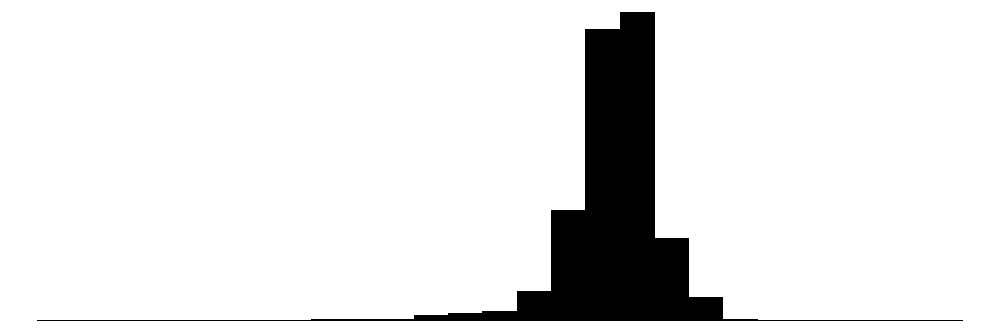 |
| s | 21 | 0 | 12.8 | 3.3 | 0.0 | 12.0 | 20.0 | |
| yob | 10 | 0 | 1934.6 | 2.9 | 1930.0 | 1935.0 | 1939.0 | 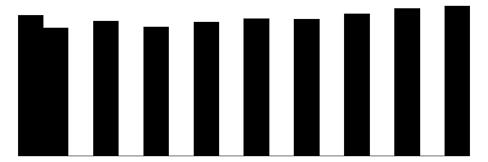 |
| qob | 4 | 0 | 2.5 | 1.1 | 1.0 | 3.0 | 4.0 | 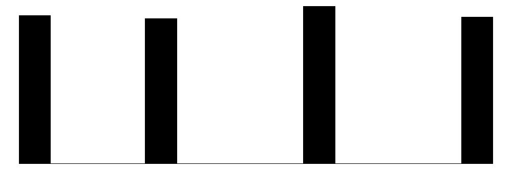 |
| sob | 51 | 0 | 30.7 | 14.2 | 1.0 | 34.0 | 56.0 | 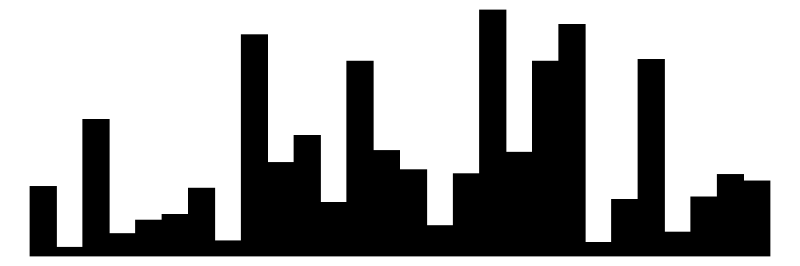 |
| age | 40 | 0 | 45.0 | 2.9 | 40.2 | 45.0 | 50.0 |
AK91 데이터 변환
q4더미 변수 생성 (4분기에 태어났다면 TRUE)- 출생 연도(
yob) 및 출생 분기(qob)를 범주형 변수로 변환
AK91 그림 1: 1단계 회귀 분석
출생 분기에 따른 교육 수준 변화를 시각화함
ggplot(ak91_age, aes(x = yob + (qob - 1) / 4, y = s )) +
geom_line() +
geom_label(mapping = aes(label = qob, color = q4)) +
guides(label = FALSE, color = FALSE) +
scale_x_continuous("Year of birth", breaks = 1930:1940) +
scale_y_continuous("Years of Education", breaks = seq(12.2, 13.2, by = 0.2),
limits = c(12.2, 13.2)) +
theme_bw()AK91 그림 1: 1단계 회귀 분석
- 숫자는 출생 분기별 평균 교육 연수를 나타냄.
- 4분기 출생자는 대부분 더 많은 교육을 받았음.
- 전반적으로 교육 수준은 증가하는 경향이 있음.
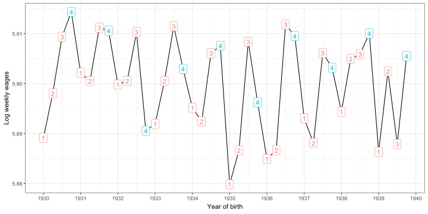
AK91 그림 2: 도구변수(IV)가 결과 변수에 미치는 영향
출생 분기별 임금 변화를 살펴보자.
AK91 그림 2: 도구변수(IV)가 결과 변수에 미치는 영향
- 4분기 출생자가 전반적으로 더 높은 임금을 받음.
- 전체적으로 시간이 지나면서 주간 임금이 다소 감소하는 경향이 있음.
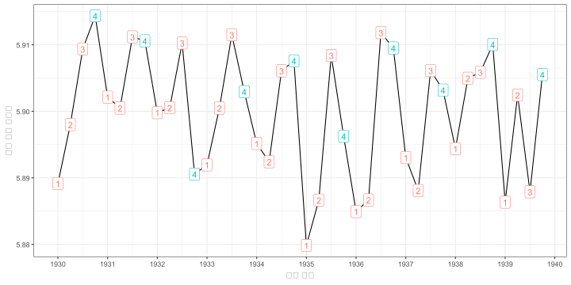
R에서 IV 추정 실행하기
library(estimatr)
# 모델 리스트 생성
mod <- list()
# 표준 (편향된) OLS
mod$ols <- lm(lnw ~ s, data = ak91)
# IV: 출생 분기가 4분기인가?
# 2단계 방식으로 IV 수행
mod[["1. stage"]] <- lm(s ~ q4, data = ak91)
ak91$shat <- predict(mod[["1. stage"]])
mod[["2. stage"]] <- lm(lnw ~ shat, data = ak91)
# 2SLS 실행
# IV를 한 번에 수행
# 공식: y ~ x | z
mod$`2SLS` <- iv_robust(lnw ~ s | q4,
data = ak91,
diagnostics = TRUE)AK91 결과 테이블
| ols | 1. stage | 2. stage | 2SLS | |
|---|---|---|---|---|
| (Intercept) | 4.995*** | 12.747*** | 4.955*** | 4.955*** |
| (0.004) | (0.007) | (0.381) | (0.358) | |
| s | 0.071*** | 0.074** | ||
| (0.000) | (0.028) | |||
| q4 | 0.092*** | |||
| (0.013) | ||||
| shat | 0.074* | |||
| (0.030) | ||||
| R2 | 0.117 | 0.000 | 0.000 | 0.117 |
| RMSE | 0.64 | 3.28 | 0.68 | 0.64 |
| 1. Stage F: | 48.9904279659094 | |||
| + p < 0.1, * p < 0.05, ** p < 0.01, *** p < 0.001 | ||||
- OLS는 측정 오류로 인해 편향될 가능성이 있음.
- 1단계: IV
q4는 통계적으로 유의하나 효과는 작음 (4분기에 태어난 경우 교육 연수 0.092 증가). \(R^2\)는 0%지만, F-통계량은 큼. - 2단계의 추정치는
2SLS와 동일하지만 표준 오차가 다름 (2단계 결과의 표준 오차는 잘못됨).
F-통계량
제한된 모델과 제한되지 않은 모델을 비교하는 데 유용함.
여기서는 도구 변수가 공동으로 유의미한지 확인하는 것이 핵심.
IV가 거의 예측력을 가지지 못하면, F-통계량이 낮아지고 귀무가설을 기각할 수 없음. 😞
추가 제어 변수
교육 수준에서 명확한 시간적 경향이 관찰됨.
임금도 경기 변동의 영향을 받을 가능성이 있음.
연도 효과를 통제해야 함.
여러 개의 IV를 사용할 수도 있음.
추가 제어 변수 반영한 추정
# we keep adding to our `mod` list:
mod$ols_yr <- update(mod$ols, . ~ . + yob_fct) # previous OLS model
# add exogenous vars on both sides of the `|` !
mod[["2SLS_yr"]] <- estimatr::iv_robust(lnw ~ s + yob_fct | q4 + yob_fct, data = ak91, diagnostics = TRUE )
# use all quarters as IVs
mod[["2SLS_all"]] <- estimatr::iv_robust(lnw ~ s + yob_fct | qob_fct + yob_fct, data = ak91, diagnostics = TRUE )| ols | 1. stage | 2. stage | 2SLS | |
|---|---|---|---|---|
| (Intercept) | 4.995*** | 12.747*** | 4.955*** | 4.955*** |
| (0.004) | (0.007) | (0.381) | (0.358) | |
| s | 0.071*** | 0.074** | ||
| (0.000) | (0.028) | |||
| q4 | 0.092*** | |||
| (0.013) | ||||
| shat | 0.074* | |||
| (0.030) | ||||
| R2 | 0.117 | 0.000 | 0.000 | 0.117 |
| RMSE | 0.64 | 3.28 | 0.68 | 0.64 |
| 1. Stage F: | 48.9904279659094 | |||
| + p < 0.1, * p < 0.05, ** p < 0.01, *** p < 0.001 | ||||
추가 제어 변수 반영한 결과
| ols | 2SLS | ols_yr | 2SLS_yr | 2SLS_all | |
|---|---|---|---|---|---|
| (Intercept) | 5.00*** | 4.96*** | 5.02*** | 4.97*** | 4.59*** |
| (0.00) | (0.36) | (0.01) | (0.35) | (0.25) | |
| s | 0.07*** | 0.07** | 0.07*** | 0.08** | 0.11*** |
| (0.00) | (0.03) | (0.00) | (0.03) | (0.02) | |
| R2 | 0.117 | 0.117 | 0.118 | 0.117 | 0.091 |
| RMSE | 0.64 | 0.64 | 0.64 | 0.64 | 0.65 |
| Instruments | none | Q4 | none | Q4 | All Quarters |
| Year of birth | no | no | yes | yes | yes |
| + p < 0.1, * p < 0.05, ** p < 0.01, *** p < 0.001 | |||||
연도 통제 추가… - OLS 추정치는 거의 변화 없음 - 2SLS 추정치는 소폭 증가
모든 분기를 IV로 사용… - 2SLS 추정치의 정밀성이 크게 향상됨 - 추정된 계수는 이제 10.5%!
AK91: 출생 분기를 이용한 도구 변수 (QOB IV)
- 일관된 추정치를 얻으려면 다음 조건이 충족되어야 함:
- IV가 내생적 변수의 예측력이 높아야 함.
- IV가 무작위적으로 할당되었거나 누락된 변수와 독립적이어야 함.
- IV가 교육을 통해서만 결과 변수에 영향을 미쳐야 함.
- 출생 분기(QOB)는 이러한 조건을 충족하는가?
- 관련성: 1단계 그림과 높은 F-통계량은 강한 관련성을 보여줌 ✅
- 독립성: 출생 분기는 모성 특성과 무관한가? 출생일은 완전히 무작위적이지 않음. 특정 사회경제적 배경에서는 특정 계절에 출산하는 경향이 있음. 그러나 최상위 모성 교육 수준은 2분기에 출산하는 경향이 있으며, 4분기가 아님 ✅
- 배제 가능성: 4분기에 태어난 아이들이 초기 학습에서 불리한 환경을 겪고, 장기적으로 부정적인 영향을 받을 가능성은? 그렇다면 \(E[u|z] \neq 0\)가 성립함. 하지만 실제로는 4분기 출생자들이 더 높은 교육과 임금을 얻음 ✅
Identification and Inference
IV 식별 (Identification)
선형 모형으로 돌아가 보자:
\[ y = \beta_0 + \beta_1 x + u \]
여기서 \(Cov(x,u) \neq 0\) 일 경우, \(x\)는 내생적 변수이다.
IV의 조건
- 1단계 조건(관련성): \(Cov(z,x) \neq 0\)
- IV 외생성 조건: \(Cov(z,u) = 0\), 즉 IV는 결과 방정식에서 외생적이어야 한다.
유효한 모델(A) vs 유효하지 않은 모델(B)
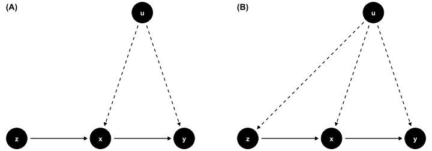IV 식별 조건
IV의 조건
- 1단계 조건(관련성): \(Cov(z,x) \neq 0\)
- IV 외생성 조건: \(Cov(z,u) = 0\)
- 이러한 조건이 어떻게 \(\beta_1\)을 식별하는가?
- (이론적으로 \(\beta_1\)을 특정할 수 있는 방법은?)
IV 식별
\[\begin{align} Cov(z,y) &= Cov(z, \beta_0 + \beta_1 x + u) \\ &= \beta_1 Cov(z,x) + Cov(z,u) \end{align}\]
- 조건 2 (IV 외생성)에 따라 \(Cov(z,u) = 0\)이면:
\[ Cov(z,y) = \beta_1 Cov(z,x) \]
- 조건 1 (관련성)이 성립하면 \(Cov(z,x)\neq0\) 이므로 다음과 같이 나눌 수 있다:
\[ \beta_1 = \frac{Cov(z,y)}{Cov(z,x)}. \]
- 따라서 \(\beta_1\)은 식별 가능하며, 표본 공식을 이용해 추정할 수 있다.
IV 추정량
표본 공식을 적용하면 다음과 같다:
\[\hat{\beta}_1 = \frac{\sum_{i=1}^n (z_i - \bar{z})(y_i - \bar{y})}{\sum_{i=1}^n (z_i - \bar{z})(x_i - \bar{x})}\]
- 절편 추정치는 \(\hat{\beta}_0 = \bar{y} - \hat{\beta}_1 \bar{x}\)
- 만약 조건 1, 2가 충족된다면, IV 추정량은 일치 추정량이 된다:
\[ \text{plim}(\hat{\beta}_1) = \beta_1 \]
이 경우, 일관성을 가진 추정량(consistent estimator)이라고 한다.
IV 추정량의 분산
\(E(u^2|z) = \sigma^2\) 가정 하에:
\[Var(\hat{\beta}_{1,IV}) = \frac{\sigma^2}{n \sigma_x^2 \rho_{x,z}^2}\]
- \(\sigma_x^2\): \(x\)의 분산
- \(\sigma^2\): \(u\)의 분산
- \(\rho_{x,z}\): \(x\)와 \(z\)의 상관계수
두 가지 사실을 쉽게 관찰 할 수 있다.
- \(\rho_{x,z}\)가 없으면 OLS 분산과 동일
- n이 증가하면 분산이 감소
IV의 분산이 OLS보다 항상 큼
\(\rho_{x,z}\)를 \(R_{x,z}^2\)로 바꾸면:
\[Var(\hat{\beta}_{1,IV}) = \frac{\sigma^2}{n \sigma_x^2 R_{x,z}^2}\]
- \(R_{x,z}^2 < 1\) 이므로, 일반적으로 \(Var(\hat{\beta}_{1,IV}) > Var(\hat{\beta}_{1,OLS})\)임.
- \(R_{x,z}^2 = 1\)이면 OLS와 동일해짐. 즉, \(z = x\)이면 IV는 불필요함.
따라서 외생변수 x가 있으면 굳이 z를 통해 IV 추정을 할 필요가 없다.
교육이 여성 임금에 미치는 영향
\[ \log wage = \beta_0 + \beta_1 educ + u \]
OLS와 IV(부친 학력 사용) 비교:
| OLS | First Stage | IV | |
|---|---|---|---|
| (Intercept) | -0.185 | 10.237 | 0.441 |
| (0.185) | (0.276) | (0.467) | |
| educ | 0.109 | 0.059 | |
| (0.014) | (0.037) | ||
| fatheduc | 0.269 | ||
| (0.029) | |||
| Num.Obs. | 428 | 428 | 428 |
| R2 | 0.118 | 0.173 | 0.093 |
| R2 Adj. | 0.116 | 0.171 | 0.091 |
| AIC | 888.5 | 1846.0 | 900.2 |
| BIC | 900.7 | 1858.2 | 912.4 |
| Log.Lik. | -441.260 | -920.025 | |
| F | 56.929 | 88.841 | |
| RMSE | 0.68 | 2.08 | 0.69 |
IV Standard Errors
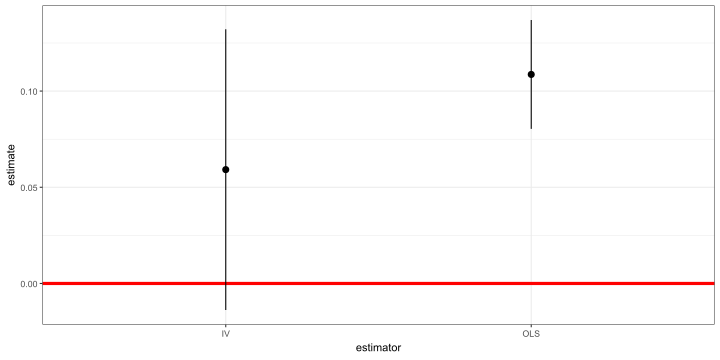약한 도구 변수 (Weak IV) 문제
IV 추정치는 consistent하다
약한 IV의 경우 일치성이 보장되지 않음:
\[ \text{plim}(\hat{\beta}_{1,IV}) = \beta_1 + \frac{Cor(z,u)}{Cor(z,x)} \cdot \frac{\sigma_u}{\sigma_x} \]
- 약한 IV는 \(Cor(z,x)\) 값이 작은 경우를 의미함.
- \(Cor(z,x)\)가 작으면 일치성이 깨질 가능성이 높음.
- n이 크더라도 실제 모집단의 \(\beta_1\)으로 수렵하지 않을 수 있음.
약한 도구 변수 (Weak IV)
- 임산부가 하루에 피운 담배 갑 수(packs)가 아기의 출생 체중(bwght)에 미치는 영향을 살펴보자:
\[ \log(bwght) = \beta_0 + \beta_1 packs + u \]
우리는 흡연 행동이 건강 관련 변수들과 상관관계를 가질 수 있으며, 이러한 변수들이 \(u\)에 포함되어 출생 체중에 영향을 미칠 가능성이 있다고 우려한다. 따라서 적절한 도구 변수를 찾아야 한다.
담배 가격(cigprice)을 IV로 사용한다고 가정하자. 이는 담배 가격이 \(u\)에 포함된 요인들과 무상관하다는 가정하에 가능하다. 먼저 cigprice가 packs에 미치는 영향을 1단계 회귀분석을 통해 확인한 후, 2단계 최소자승법(2SLS) 추정 결과를 살펴보자.
약한 도구 변수 (Weak IV)
| First Stage | IV | |
|---|---|---|
| (Intercept) | 0.067 | 4.448 |
| (0.103) | (0.940) | |
| cigprice | 0.000 | |
| (0.001) | ||
| packs | 2.989 | |
| (8.996) | ||
| R2 | 0.000 | -23.230 |
| 1. Stage F: | 0.120905223674891 |
약한 도구 변수 (Weak IV)
첫 번째 열: 매우 약한 첫 번째 단계. cigprice가 packs에 미치는 영향이 거의 없다!
\(R^2\) 값이 0에 가까움.
그렇다면 이 IV를 그대로 사용하면 어떻게 될까?
두 번째 열: packs가 출생 체중에 매우 크고, 심지어 양의 영향을 미치는 것으로 나타남. 🤔
하지만 표준 오차가 매우 큼.
\(R^2\) 값이 -23?!
첫 번째 단계의 F-통계량: 0.121. 이는 p-값이 0.728 임을 의미하며, 귀무가설(H0): 첫 번째 단계의 효과 없음을 전혀 기각할 수 없음.
결론: 잘못된 접근 방식 ❌
🔍 인과 관계를 찾아가는 길
✅ 데이터를 어떻게 다룰까?: 읽기(Read), 정리(Tidy), 시각화(Visualize)…
✅ 변수간 관계를 어떻게 요약할까? 단순 / 다중 선형 회귀…비선형회귀, 교차변수…
✅ 인과 관계(Causality)란 무엇인가?
✅ 전체 모집단을 관측하지 못하면 어떻게 할까? Sampling!
✅ 우리의 연구 결과가 단순한 무작위(Randomness) 때문일 수도 있을까? 신뢰구간과 가설검정. 통계적 추론
🚧 실제로 외생성을 어떻게 찾아낼 수 있을까?: 이중 차분, 회귀 불연속 설계, 도구 변수
THE END!